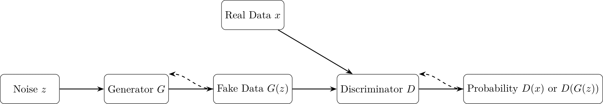
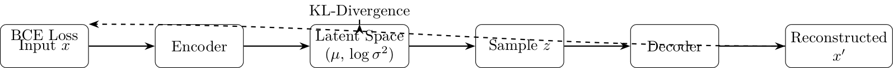
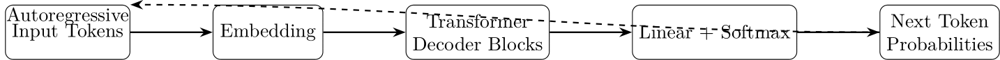
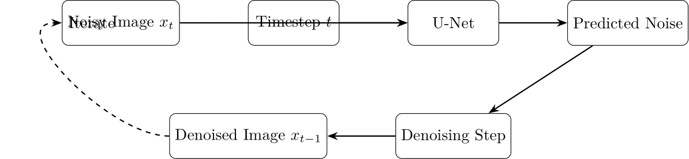
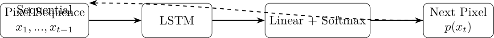

A comprehensive overview of modern generative AI techniques
June 2025
This presentation covers five key Generative AI approaches:
Each approach has unique strengths, weaknesses, and applications in the field of generative AI.
Goodfellow et al., 2014, "Generative Adversarial Nets"

Kingma & Welling, 2013, "Auto-Encoding Variational Bayes"

Vaswani et al., 2017, "Attention is All You Need"

Ho et al., 2020, "Denoising Diffusion Probabilistic Models"

van den Oord et al., 2016, "Pixel Recurrent Neural Networks"

| Model | Strengths | Weaknesses |
|---|---|---|
| GANs | Sharp images, Fast inference | Training instability, Mode collapse |
| VAEs | Stable training, Structured latent space | Blurry outputs, Less realistic |
| Transformers | Excellent for text, Scales well | High computational cost, Hallucinations |
| Diffusion | High-quality outputs, Stable training | Slow inference, Complex implementation |
| Autoregressive | Explicit probability, High-quality details | Slow generation, High memory usage |
Each model type has found specific niches where its strengths are most valuable. Recent advances often combine multiple approaches to leverage complementary benefits.
/code/ directory/docs//images/Prerequisites: Python 3.8+, PyTorch 2.0+, and related libraries
Explore the full tutorial at:
/docs//code//images/June 2025